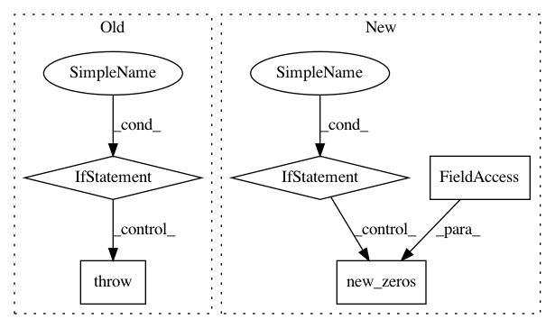

b69667001f250a54a37129a000a8d5160e047239,mmdet/core/bbox/assigners/point_assigner.py,PointAssigner,assign,#PointAssigner#Any#Any#Any#Any#,22
Before Change
Returns:
:obj:`AssignResult`: The assign result.
if points.shape[0] == 0 or gt_bboxes.shape[0] == 0:
raise ValueError("No gt or bboxes")
points_xy = points[:, :2]
points_stride = points[:, 2]
points_lvl = torch.log2(
points_stride).int() // [3...,4...,5...,6...,7...]
After Change
num_points = points.shape[0]
num_gts = gt_bboxes.shape[0]
if num_gts == 0 or num_points == 0:
// If no truth assign everything to the background
assigned_gt_inds = points.new_full((num_points, ),
0,
dtype=torch.long)
if gt_labels is None:
assigned_labels = None
else:
assigned_labels = points.new_zeros((num_points, ),
dtype=torch.long)
return AssignResult(
num_gts, assigned_gt_inds, None, labels=assigned_labels)
points_xy = points[:, :2]
points_stride = points[:, 2]
points_lvl = torch.log2(
points_stride).int() // [3...,4...,5...,6...,7...]
In pattern: SUPERPATTERN
Frequency: 4
Non-data size: 5
Instances
Project Name: open-mmlab/mmdetection
Commit Name: b69667001f250a54a37129a000a8d5160e047239
Time: 2019-12-24
Author: erotemic@gmail.com
File Name: mmdet/core/bbox/assigners/point_assigner.py
Class Name: PointAssigner
Method Name: assign
Project Name: pytorch/fairseq
Commit Name: 343819f93523ae4f25bd1e9ee192af74cf6962ee
Time: 2018-09-03
Author: alexei.b@gmail.com
File Name: fairseq/trainer.py
Class Name: Trainer
Method Name: _get_grads
Project Name: open-mmlab/mmdetection
Commit Name: b69667001f250a54a37129a000a8d5160e047239
Time: 2019-12-24
Author: erotemic@gmail.com
File Name: mmdet/core/bbox/assigners/max_iou_assigner.py
Class Name: MaxIoUAssigner
Method Name: assign_wrt_overlaps